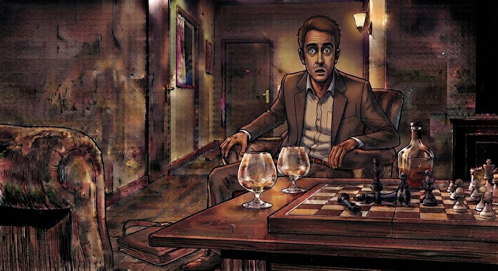

Inicio
Odón termina su horario laboral y se dirige a su casa. Camina despacio, con el cuerpo cansado y la cabeza en otra parte.
Al llegar, se siente exhausto. Deja las llaves sobre la mesa y, sin ganas de nada, decide…
La sala de estar
Odón se acomoda en el sofá de la sala de estar. Apenas apoya la cabeza, el cuerpo se le afloja y el silencio de la casa lo envuelve.
Entonces, de la nada, tocan la puerta.
Lo ignora por completo
Odón no se mueve. De repente, empieza a escuchar ruidos extraños y rasguños en la puerta. Se asusta, y decide abrir para ver quién es.
Entreabre apenas y se encuentra con un cuerpo espeluznante, largo, envuelto en una túnica negra. Odón, detrás de la puerta, pregunta…
Abre para ver quién es
Al abrir, ve un cuerpo espeluznante, largo y envuelto en una túnica negra.
Odón, detrás de la puerta, pregunta…
¿Quién es?
La Muerte dice: “Soy la Muerte y vengo a llevarte conmigo. Ha llegado tu hora.”
Antes de que Odón pueda reaccionar, la figura agrega:
La Muerte dice: “Pero puedes seguir con tu vida si consigues vencerme en una partida de ajedrez. Te advierto que nadie lo ha conseguido.”
Odón escucha esas palabras y se queda inmóvil. Entiende lo que está en juego. Y decide…
No jugar
Odón decide no jugar. Piensa que su vida está “tirada a la basura” y que no hay otro remedio que pueda salvarlo.
Baja la mirada, se hace a un lado y deja que la Muerte cruce el umbral.
Fin
Esta historia tiene otros caminos.
El agua bendita
Odón corre hasta el jarrón de agua bendita, lo agarra y se lo arroja a la Muerte para espantarla.
El gesto solo consigue enfurecerla por completo. Un frío le cierra la garganta, el aire se le agota y la Muerte lo somete a una asfixia de la que no puede zafarse.
Fin
Esta historia tiene otros caminos.
Acepta jugar
Odón acepta el desafío. Antes de jugar, nervioso, propone tomar una copa de brandy mientras dure la partida.
La Muerte acepta la invitación y, de repente, aparece un tablero sobre la mesa ratona, con las piezas ya dispuestas, listo para…
La partida
Las piezas avanzan bajo la luz de la sala y las copas se vacían despacio.
Luego de varias horas y de realizar varios movimientos…
Varias horas
Pasan las horas y Odón, cada vez más concentrado, logra cercar al rey negro. Mueve su torre y anuncia su victoria:
¡Jaque mate!
En el mismo momento del festejo, la Muerte desaparece. Odón se despierta asustado y se da cuenta de que todo era “un sueño”…
Hasta que…

Baja la mirada y un escalofrío le atraviesa el cuerpo. Sobre la mesa ratona hay dos copas vacías, la botella de brandy y el tablero de ajedrez con el trebejo del rey negro, vencido.
Ahora sabe que la oportunidad que le dio ese ser fue para mejorar su vida y buscarle un propósito.
Fin
Esta historia tiene otros caminos.
Varios movimientos
La Muerte termina ganando. Aun estando cerca de la derrota, fue un contrincante difícil.
Odón dice: “Gracias, Muerte, por darme la última oportunidad de jugar al juego que más me entusiasmaba cuando era niño.”
La Muerte dice: “A pesar de ganarte, me has demostrado que quieres seguir luchando por tu vida. Te voy a dar…”
Una última oportunidad
Odón, feliz al escuchar su respuesta, le agradece profundamente por la oportunidad.
Esa noche algo cambia en él: su filosofía de vida ya no será la misma.
Fin
Esta historia tiene otros caminos.
El espejo del baño
Odón se mete en el baño y abre la ducha. Mientras el vapor empaña el aire, se mira en el espejo.
Por un segundo ve una sombra detrás de él. Se da vuelta y ve a la…
Muerte
Frente a él está la Muerte. Odón, en un impulso, le tira el pote de crema para noquearla, pero el objeto la traspasa como si fuera humo.
Al ver que nada puede tocarla, intenta correr de la situación…
Correr
Pero fue en vano. El espectro lo agarra y le dice que es la Muerte.
La Muerte dice: “Ya llegó tu hora, señor. Lo voy a llevar a mi reino y, lamentablemente…”
El destino
Odón trata de calmarse. Piensa en todo lo que ha hecho en el transcurso de su vida y se da cuenta de las tantas cosas que dejó de hacer, de todo lo que perdió por llevar una “vida productiva” y sustentarse por sí mismo.
Lamentablemente, acepta su destino.
Fin
Esta historia tiene otros caminos.
Cocinarse
Odón se cocina una polenta con queso. El aroma llena la cocina y, por un rato, algo parece salir bien en el día.
Se sienta a la mesa y, al momento de empezar a comer…
Se corta la luz
Todo se apaga de golpe y la casa queda sumida en la oscuridad.
Odón se enfada y va a buscar una linterna para tener algo de luz…
Buscar una linterna
Avanza a tientas por el pasillo. En el camino siente que alguien está detrás de él, pero no le da importancia y sigue hacia la sala de estar…
La sala de estar
Busca en un cajón hasta que encuentra la linterna. La prende y se da vuelta.
Al iluminar la sala ve una sombra parada, y se acerca cada vez más…
Vuelve la luz
Las luces de la casa se encienden de nuevo. Odón, asustado y nervioso, le pregunta a la figura quién es y a qué viene…